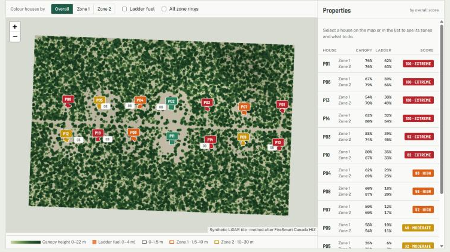

Home Ignition Zone assessment
Rings at 1.5–10 m · 10–30 m
FireSmart LiDAR neighbourhood assessment
Scores every house in an airborne LiDAR tile against the FireSmart Home Ignition Zone, using canopy and ladder fuel measured directly from the point cloud.
Scoring follows the FireSmart Canada Home Ignition Zone guidance, measured in the 1.5–10 m and 10–30 m zones around the home. This is an independent project, not affiliated with or endorsed by FireSmart Canada.
- Python
- laspy / LAZ
- NumPy · SciPy
- Shapely · pyproj
- Ontario classified point cloud
- YAML config
- Leaflet
- Problem
- Most wildfire home losses start in the 30 m around the house. Walking every lot to assess vegetation is slow, but Ontario's classified LiDAR already holds the structure of every tree and shrub near every building.
- Approach
- Reads LAS 1.4 / LAZ tiles, filters noise, water and bridge classes, interpolates a DTM from ground returns and computes height above ground for every point. On a 1 m grid it maps canopy (vegetation ≥ 3 m) and ladder fuel (returns 1–4 m). Buildings come from class 6 or are detected from geometry: smooth, single-return roof cells with a compactness test. Each house gets canopy and ladder percentages for the 1.5–10 m and 10–30 m rings, overhanging branches and slope.
- Quality control
- A synthetic tile (~4.3 M points) ships with known truth for every lot: 14 of 14 houses found from geometry alone within ~1 m, Spearman −0.98 between yard management and score. The report states the bias openly: canopy reads ~7 points high where crown edges spill into cells, and ladder fuel ~7 points low where dense crowns hide low branches. Every threshold lives in one config file, and point-density settings were retuned for the ~20 pts/m² 2024 lift.
- Result
- A one-click Windows run downloads and processes 111 one-kilometre tiles of the 2024 Sault Ste. Marie lift along the Searchmont corridor (about 18 GB) and scores 603 houses across Deroche, Hodgins, Gaudette and Shields townships. That map is password-protected, since property-level results belong to the owner. The public demo uses the synthetic tile.
